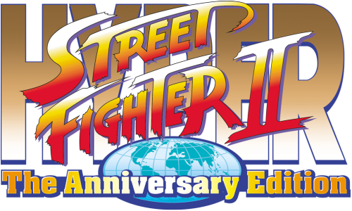

Move List/Bios - Universal/Home


You can e-mail corrections/additions to The Webmaster
Last updated: 07/18/26
Note: All commands are assuming your character is facing right.
If you are facing left, you must reverse the directional commands.
Backwards becoming Forwards and Vice Versa.
It's recommended that your controls match the default setting.
Key:
| Arcade: |
Xbox 360: |
PlayStation 3: |
BlankaInfo:
Date of Birth: February 12th, 1966
Nationality: Brazilian
Height: 6'5"
Weight: 218 lb
Measurements: 77-47-67
Blood Type: B
Fighting Style: Savage Jungle Fighting
Alignment: Chaotic Good
Likes: His mother
Dislikes: Army ants
Bio:
Once a boy named Jimmy, Blanka survived a plane crash and was raised by the jungle. Exposure to electric eels mutated his body, granting bio-electric powers and feral strength. Entering the World Warrior tournament, he hopes to find connection with humanity
despite his monstrous appearance. Beneath the green exterior and wild roars lies a gentle soul searching for acceptance and family.
Normal - Street Fighter II: The World Warrior (1991)
Champ - Street Fighter II: Champion Edition (1992)
Turbo - Street Fighter II Turbo: Hyper Fighting (1992)
Super - Super Street Fighter II: The New Challengers (1993)
Super T - Super Street Fighter II Turbo (1994)
Chun-LiInfo:
Date of Birth: March 1st, 1968
Nationality: Chinese
Height: 5'8"
Weight: (She won't tell)
Measurements: 34-22-35
Blood Type: A
Fighting Style: Tai Qi Quan
Alignment: Lawful Good
Likes: Crepes, Aerobics
Dislikes: M. Bison
Bio:
An Interpol agent from China seeking justice for her father Dorai's murder. Believing M. Bison and Shadaloo are responsible, she enters the tournament to infiltrate the organization and gather evidence. Combining lightning-fast kicks with unwavering determination,
she fights not for glory but for closure. Her beauty often causes opponents to underestimate her devastating martial arts prowess.
Normal - Street Fighter II: The World Warrior (1991)
Champ - Street Fighter II: Champion Edition (1992)
Turbo - Street Fighter II Turbo: Hyper Fighting (1992)
Super - Super Street Fighter II: The New Challengers (1993)
Super T - Super Street Fighter II Turbo (1994)
DhalsimInfo:
Date of Birth: November 22nd, 1952
Nationality: Indian
Height: 5'10"
Weight: 107 lb
Blood Type: O
Fighting Style: Yoga
Alignment: Neutral Good
Likes: Curry, Meditation
Dislikes: Candy
Bio:
A pacifist yoga master from India who fights only to raise money for his impoverished village. His spiritual training grants him stretching limbs and fire-breathing abilities. Despite hating violence, he enters the tournament to combat evil and prove spiritual
strength over brute force. He remains detached from worldly conflicts, seeking enlightenment while protecting the innocent.
Normal - Street Fighter II: The World Warrior (1991)
Champ - Street Fighter II: Champion Edition (1992)
Turbo - Street Fighter II Turbo: Hyper Fighting (1992)
Super - Super Street Fighter II: The New Challengers (1993)
Super T - Super Street Fighter II Turbo (1994)
E. HondaInfo:
Date of Birth: November 3rd, 1960
Nationality: Japanese
Height: 6'1"
Weight: 302 lb
Measurements: 83-70-82
Blood Type: A
Fighting Style: Sumo Wrestling
Alignment: Lawful Good
Likes: Sumo Wrestlers, Naps, Baths
Dislikes: Indecisiveness
Bio:
A proud sumo wrestler from Japan determined to prove his sport's superiority to the world. Running his own sumo stable, he enters the tournament to demonstrate that sumo is a legitimate martial art. Cheerful, honorable, and fiercely loyal, he dreams of
elevating sumo to global recognition while enjoying life's pleasures. His massive frame conceals surprising agility.
Normal - Street Fighter II: The World Warrior (1991)
Champ - Street Fighter II: Champion Edition (1992)
Turbo - Street Fighter II Turbo: Hyper Fighting (1992)
Super - Super Street Fighter II: The New Challengers (1993)
Super T - Super Street Fighter II Turbo (1994)
GuileInfo:
Date of Birth: December 23rd, 1960
Nationality: American
Height: 6'0"
Weight: 218 lb
Measurements: 49-32-35
Blood Type: O
Fighting Style: US Special Forces Training
Alignment: Lawful Good
Likes: Weak Coffee, his Hair
Dislikes: Fermented Soybeans
Bio:
A U.S. Air Force major seeking revenge for his best friend Charlie Nash, who was killed by Shadaloo. His Sonic Boom and Flash Kick perfect Charlie's techniques. Stoic and disciplined, Guile initially fights for vengeance but discovers a greater purpose
in protecting global peace. His military precision and cool demeanor mask deep emotional wounds from his friend's death.
Normal - Street Fighter II: The World Warrior (1991)
Champ - Street Fighter II: Champion Edition (1992)
Turbo - Street Fighter II Turbo: Hyper Fighting (1992)
Super - Super Street Fighter II: The New Challengers (1993)
Super T - Super Street Fighter II Turbo (1994)
KenInfo:
Date of Birth: February 14th, 1965
Nationality: American
Height: 5'10"
Weight: 169 lb
Measurements: 44-32-33
Blood Type: B
Fighting Style: Shotokan Karate
Alignment: Neutral Good
Likes: Cars, Rock & Roll
Dislikes: Speed Limits, Speeding Tickets
Bio:
Wealthy heir to the Masters fortune and Ryu's former training partner under Gouken. Ken enters the tournament to test his skills against his rival and prove his fiery, aggressive style of Shotokan. Confident and flamboyant, he balances fighting with his
family duties. Despite his arrogance, he's fiercely loyal and sees Ryu as both his greatest rival and closest friend.
Normal - Street Fighter II: The World Warrior (1991)
Champ - Street Fighter II: Champion Edition (1992)
Turbo - Street Fighter II Turbo: Hyper Fighting (1992)
Super - Super Street Fighter II: The New Challengers (1993)
Super T - Super Street Fighter II Turbo (1994)
RyuInfo:
Date of Birth: July 21st, 1964
Nationality: Japanese
Height: 5'10"
Weight: 150 lb
Measurements: 44-31-33
Blood Type: O
Fighting Style: Shotokan Karate
Alignment: Neutral Good
Likes: Martial Arts
Dislikes: Spiders
Bio:
A martial artist who wanders the world seeking only to become stronger. Orphaned and raised by Gouken, he mastered Ansatsuken without the killing intent. Drawn to the tournament to face worthy opponents, he embodies the true spirit of combat - fighting
not for victory, but for self-improvement. Pure in spirit and dedicated to his art, he serves as the moral center of the competition.
Normal - Street Fighter II: The World Warrior (1991)
Champ - Street Fighter II: Champion Edition (1992)
Turbo - Street Fighter II Turbo: Hyper Fighting (1992)
Super - Super Street Fighter II: The New Challengers (1993)
Super T - Super Street Fighter II Turbo (1994)
ZangiefInfo:
Date of Birth: June 1st, 1956
Nationality: Russian
Height: 7'0"
Weight: 256 lb
Measurements: 64-50-59
Blood Type: A
Fighting Style: Wrestling
Alignment: Lawful Good
Likes: Wrestling, Cossack dance
Dislikes: Fireball, Sonic Boom, Yoga Fire, Tiger Shot
Bio:
A massive Russian wrestler who fights for the glory of Mother Russia. Trained by wrestling bears in Siberia, he enters the tournament to demonstrate Russian wrestling supremacy while serving as a national hero. Despite his intimidating appearance, he's
good-natured and patriotic, fighting for honor rather than personal gain. His spinning piledriver remains legendary.
Normal - Street Fighter II: The World Warrior (1991)
Champ - Street Fighter II: Champion Edition (1992)
Turbo - Street Fighter II Turbo: Hyper Fighting (1992)
Super - Super Street Fighter II: The New Challengers (1993)
Super T - Super Street Fighter II Turbo (1994)
CammyInfo:
Date of Birth: January 6th, 1974
Nationality: British
Height: 5'5"
Weight: 101 lb
Measurements: 34-22-35
Blood Type: B
Fighting Style: Shadaloo Assassination Arts / Delta Red Training
Alignment: Lawful Good
Likes: Cats
Dislikes: Everything in her sight when in a bad mood.
Bio:
A British special forces operative with amnesia and a mysterious connection to Shadaloo. Genetically enhanced and once brainwashed as one of Bison's assassins, she breaks free and joins Delta Red. Entering the tournament to uncover her past and atone for
her actions, her acrobatic fighting style and killer instinct make her a formidable opponent despite her small stature.
Super - Super Street Fighter II: The New Challengers (1993)
Super T - Super Street Fighter II Turbo (1994)
Dee JayInfo:
Date of Birth: October 31st, 1965
Nationality: Jamaican
Height: 6'
Weight: 203 lb
Measurements: 51-35-37
Blood Type: O
Fighting Style: Kickboxing, Break-dancing
Alignment: Chaotic Good
Likes: Singing, Dancing, and a good party
Dislikes: Silence
Bio:
A kickboxing champion and rhythmical musician from Jamaica. Entering the tournament to find new beats for his music while testing his fighting skills, he's perpetually cheerful and optimistic. His lightning-fast kicks and dancing fighting style reflect
his love of music and life. He dreams of becoming a world-famous recording artist while proving Caribbean fighters can compete globally.
Super - Super Street Fighter II: The New Challengers (1993)
Super T - Super Street Fighter II Turbo (1994)
Fei-LongInfo:
Date of Birth: April 23rd, 1969
Nationality: Chinese
Height: 5'8"
Weight: 132 lb
Measurements: 43-30-31
Blood Type: O
Fighting Style: Kung Fu, Hitenryu
Alignment: Lawful Good
Likes: Kung Fu, Self-Assertion
Dislikes: Spiritless men, Apathetic men, and indifferent men.
Bio:
A Hong Kong action movie star and master of Hitenryu kung Fu. Modeled after Bruce Lee, he enters the tournament to test his real fighting abilities against actual martial artists rather than choreographed movie opponents. Passionate and hot-headed, he
seeks authentic combat experience to bring realism to his films while proving he's more than just an actor.
Super - Super Street Fighter II: The New Challengers (1993)
Super T - Super Street Fighter II Turbo (1994)
T. HawkInfo:
Date of Birth: July 21st, 1959
Nationality: Mexican
Height: 7'7"
Weight: 357 lb
Measurements: 57-39-44
Blood Type: O
Fighting Style: Thunderfoot martial arts
Alignment: Lawful Good
Likes: Animals, Great sunsets against the mountains
Dislikes: Lies
Bio:
A Native American warrior from Mexico seeking revenge against M. Bison for destroying his homeland and driving his Thunderfoot tribe into exile. Massive and powerful, he fights using traditional wrestling techniques passed down through generations. Despite
his imposing size, he's deeply spiritual and fights not for glory, but to reclaim his people's sacred lands and honor.
Super - Super Street Fighter II: The New Challengers (1993)
Super T - Super Street Fighter II Turbo (1994)
BalrogInfo:
Date of Birth: September 4th, 1968
Nationality: American
Height: 6'5"
Weight: 252 lb
Measurements: 47-35-39
Blood Type: A
Fighting Style: Boxing
Alignment: Neutral Evil
Likes: Fighting, Gambling
Dislikes: Losing, Rap music
Bio:
A former heavyweight boxing champion banned for permanently injuring opponents and his violent temper. Now working as M. Bison's enforcer in Shadaloo, he enters the tournament to prove his punching power is unmatched. Driven by greed and bloodlust, his
brutal fighting style reflects his cruel nature. He cares only for money, women, and crushing anyone who stands in his way.
Champ - Street Fighter II: Champion Edition (1992)
Turbo - Street Fighter II Turbo: Hyper Fighting (1992)
Super - Super Street Fighter II: The New Challengers (1993)
Super T - Super Street Fighter II Turbo (1994)
VegaInfo:
Date of Birth: January 27th, 1967
Nationality: Spanish
Height: 6'0"
Weight: 208 lb
Measurements: 48-29-33
Blood Type: O
Fighting Style: Spanish Ninjutsu
Alignment: Chaotic Evil
Likes: Anything beautiful, Him
Dislikes: Anything ugly
Bio:
A narcissistic assassin from Spain who believes beauty is the ultimate power. Working as M. Bison's personal executioner, he enters the tournament to eliminate threats to Shadaloo while indulging his obsession with his own appearance. His clawed fighting
style and acrobatic agility make him deadly, while his mask protects his "beautiful" face from harm. He despises ugliness in all forms.
Champ - Street Fighter II: Champion Edition (1992)
Turbo - Street Fighter II Turbo: Hyper Fighting (1992)
Super - Super Street Fighter II: The New Challengers (1993)
Super T - Super Street Fighter II Turbo (1994)
SagatInfo:
Date of Birth: July 2nd, 1955
Nationality: Thai
Height: 7'5"
Weight: 303 lb
Measurements: 51-34-37
Blood Type: O
Fighting Style: Muay Thai
Alignment: Lawful Evil
Likes: Strong opponents
Dislikes: Dragon punch
Bio:
Once the undefeated Emperor of Muay Thai until Ryu scarred his chest with a Shoryuken. Consumed by hatred and humiliation, he joins Shadaloo as M. Bison's bodyguard, entering the tournament to finally defeat Ryu and reclaim his title. His massive size
and devastating Tiger Shot and Tiger Uppercut make him nearly unstoppable. Pride and vengeance drive his every action.
Champ - Street Fighter II: Champion Edition (1992)
Turbo - Street Fighter II Turbo: Hyper Fighting (1992)
Super - Super Street Fighter II: The New Challengers (1993)
Super T - Super Street Fighter II Turbo (1994)
M. BisonInfo:
Date of Birth: Unknown
Nationality: Unknown, possibly Thai or Brazilian
Height: 6'2"
Weight: 256 lb
Measurements: 52-34-36
Blood Type: A
Fighting Style: Psycho Power, Lerdrit
Alignment: Lawful Evil
Likes: To rule the world
Dislikes: The weak, Incompetent followers
Bio:
The ruthless leader of the criminal organization Shadaloo and final boss of the tournament. Possessing the deadly Psycho Power, he seeks world domination through violence and intimidation. A former martial arts champion turned dictator, he hosts the tournament
to eliminate threats and recruit powerful fighters. His cruelty knows no bounds - he murdered Chun-Li's father and countless others who opposed him.
Champ - Street Fighter II: Champion Edition (1992)
Turbo - Street Fighter II Turbo: Hyper Fighting (1992)
Super - Super Street Fighter II: The New Challengers (1993)
Super T - Super Street Fighter II Turbo (1994)
AkumaInfo:
Date of Birth: Unknown
Nationality: Japanese
Height: 5'10"
Weight: 176 lb
Measurements: 46-33-34
Blood Type: Unknown
Fighting Style: Satsui no Hado, Ansatsuken
Alignment: True Neutral
Likes: Martial arts, Strong opponents
Dislikes: Gouken, Weaklings
Bio:
Gouken's brother and Ryu and Ken's former training partner, Akuma succumbed to the Satsui no Hado (Dark Hadou), a murderous energy that requires killing opponents. He enters the tournament seeking worthy opponents to test his perfected Shun Goku Satsu
(Instant Hell Murder) technique. Believing mercy is weakness, he exists only to fight and kill those strong enough to challenge him.
Super T - Super Street Fighter II Turbo (1994)